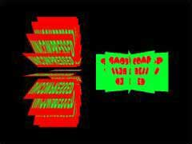

|
第33課
|
 |
|  |
加載壓縮和未壓縮的TGA文件:
在這一課裡，你將學會如何加載壓縮和為壓縮的TGA文件，由於它使用RLE壓縮，所以非常的簡單，你能很快地熟悉它的。 |
|
 |
 |
我見過很多人在遊戲開發論壇或其它地方詢問關於TGA讀取的問題。接下來的程序及註釋將會向你展示如何讀取未壓縮的TGA文件和RLE壓縮的文件。這個詳細的教程適合於OpenGL，但是我計劃改進它使其在將來更具普遍性。
我們將從兩個頭文件開始。第一個文件控制紋理結構，在第二個裡，結構和變量將為程序讀取所用。
就像每個頭文件那樣，我們需要一些包含保護措施以防止文件被重複包含。
在文件的頂部加入這樣幾行程序：
|  |
#ifndef __TEXTURE_H__ // 看看此頭文件是否已經被包含
#define __TEXTURE_H__ // 如果沒有，定義它
|
然後滾動到程序底部並添加： |
|
#endif // __TEXTURE_H__ 結束包含保護
|
這三行程序防止此文件被重複包含。文件中剩下的代碼將處於這頭兩行和這最後一行之間。
在這個頭文件中，我們將要加入完成每件工作所需的標準頭文件。在#define __TGA_H__後添加如下幾行： |
|
#pragma comment(lib, "OpenGL32.lib") // 鏈接 Opengl32.lib
#include <windows.h> // 標準Windows頭文件
#include <stdio.h> // 標準文件I/O頭文件
#include <gl\gl.h> // 標準OpenGL頭文件
|
第一個頭文件是標準Windows頭文件，第二個是為我們稍後的文件I/O所準備的，第三個是OpenGL32.lib所需的標準OpenGL頭文件。
我們將需要一塊空間存儲圖像數據以及OpenGL生成紋理所需的類型。我們將要用到以下結構： |
|
typedef struct
{
GLubyte* imageData; // 控制整個圖像的顏色值
GLuint bpp; // 控制單位像素的bit數
GLuint width; // 整個圖像的寬度
GLuint height; // 整個圖像的高度
GLuint texID; // 使用glBindTexture所需的紋理ID.
GLuint type; // 描述存儲在*ImageData中的數據(GL_RGB Or GL_RGBA)
} Texture;
|
現在說說其它的，更長的頭文件。同樣我們需要一些包含保護措施，這和上述最後一個是一樣的。
接下來，看看另外兩個結構，它們將在處理TGA文件的過程中使用。
| |
typedef struct
{
GLubyte Header[12]; // 文件頭決定文件類型
} TGAHeader;
typedef struct
{
GLubyte header[6]; // 控制前6個字節
GLuint bytesPerPixel; // 每像素的字節數 (3 或 4)
GLuint imageSize; // 控制存儲圖像所需的內存空間
GLuint type; // 圖像類型 GL_RGB 或 GL_RGBA
GLuint Height; // 圖像的高度
GLuint Width; // 圖像寬度
GLuint Bpp; // 每像素的比特數 (24 或 32)
} TGA;
|
現在我們聲明那兩個結構的一些實例，那樣我們可以在程序中使用它們。 |
|
TGAHeader tgaheader; // 用來存儲我們的文件頭
TGA tga; // 用來存儲文件信息
|
我們需要定義一對文件頭，那樣我們能夠告訴程序什麼類型的文件頭處於有效的圖像上。如果是未壓縮的TGA圖像，前12字節將會是0
0 2 0 0 0 0 0 0 0 0 0，如果是RLE壓縮的，則是0 0 10 0 0 0 0 0 0 0 0 0。這兩個值允許我們檢查正在讀取的文件是否有效。
| |
// 未壓縮的TGA頭
GLubyte uTGAcompare[12] = {0,0, 2,0,0,0,0,0,0,0,0,0};
// 壓縮的TGA頭
GLubyte cTGAcompare[12] = {0,0,10,0,0,0,0,0,0,0,0,0};
|
最後，我們聲明兩個函數用於讀取過程。
| |
// 讀取一個未壓縮的文件
bool LoadUncompressedTGA(Texture *, char *, FILE *);
// 讀取一個壓縮的文件
bool LoadCompressedTGA(Texture *, char *, FILE *);
|
現在，回到cpp文件，和程序中真正首當其衝部分，我將會省去一些錯誤消息處理代碼並且使教程更短、更具可讀性。你可以參看教程包含的文件（在文章的尾部有鏈接）。
馬上，我們就可以在文件開頭包含我們剛剛建立的頭文件。 |
|
#include "tga.h" // 包含我們剛剛建立的頭文件
|
不我們不需要包含其它任何文件了，因為我們已經在自己剛剛完成的頭文件中包含他們了。
接下來，我們要做的事情是看看第一個函數，名為LoadTGA(…)。 |
|
// 讀取一個TGA文件!
bool LoadTGA(Texture * texture, char * filename)
{
|
它有兩個參數。前者是一個指向紋理結構的指針，你必須在你的代碼中聲明它（見包含的例子）。後者是一個字符串，它告訴計算機在哪裡去找你的紋理文件。
函數的前兩行聲明了一個文件指針，然後打開由「filename」參數指定的文件，它由函數的第二個指針傳遞進去。 |
|
FILE * fTGA; // 聲明文件指針
fTGA = fopen(filename, "rb"); // 以讀模式打開文件
|
接下來的幾行檢查指定的文件是否已經正確地打開。 |
|
if(fTGA == NULL) // 如果此處有錯誤
{
...Error code...
return false; // 返回 False
}
|
下一步，我們嘗試讀取文件的首12個字節的內容並且將它們存儲在我們的TGAHeader結構中，這樣，我們得以檢查文件類型。如果fread失敗，則關閉文件，顯示一個錯誤，並且函數返回false。 |
|
if(fread(&tgaheader, sizeof(TGAHeader), 1, fTGA) == 0)
{
...Error code here...
return false; // 如果失敗則返回 False
}
|
接著，通過我們用辛苦編的程序剛讀取的頭，我們繼續嘗試確定文件類型。這可以告訴我們它是壓縮的、未壓縮甚至是錯誤的文件類型。為了達到這個目的，我們將會使用memcmp(…)函數。 |
|
// 如果文件頭附合未壓縮的文件頭格式
if(memcmp(uTGAcompare, &tgaheader, sizeof(tgaheader)) == 0)
{
// 讀取未壓縮的TGA文件
LoadUncompressedTGA(texture, filename, fTGA);
}
// 如果文件頭附合壓縮的文件頭格式
else if(memcmp(cTGAcompare, &tgaheader, sizeof(tgaheader)) == 0)
{
// 讀取壓縮的TGA格式
LoadCompressedTGA(texture, filename, fTGA);
}
else // 如果任一個都不符合
{
...Error code here...
return false; // 返回 False
}
|
我們將要開始讀取一個未壓縮格式文件的章節。
下面開始我們要做的第一件事，像往常一樣，是函數頭。 |
|
//讀取未壓縮的TGA文件
bool LoadUncompressedTGA(Texture * texture, char * filename, FILE * fTGA)
{
|
這個函數有3個參數。頭兩個和LoadTGA中的一樣，僅僅是簡單的傳遞。第三個是來自前一個函數中的文件指針，因此我們沒有丟失我們的空間。
接下來我們試著再從文件中讀取6個字節的內容，並且存儲在tga.header中。如果他失敗了，我們運行一些錯誤處理代碼，並且返回false。 |
|
// 嘗試繼續讀取6個字節的內容
if(fread(tga.header, sizeof(tga.header), 1, fTGA) == 0)
{
...Error code here...
return false; // 返回 False
}
|
現在我們有了計算圖像的高度、寬度和BPP的全部信息。我們在紋理和本地結構中都將存儲它。 |
|
texture->width = tga.header[1] * 256 + tga.header[0]; // 計算高度
texture->height = tga.header[3] * 256 + tga.header[2]; // 計算寬度
texture->bpp = tga.header[4]; // 計算BPP
tga.Width = texture->width; // 拷貝Width到本地結構中去
tga.Height = texture->height; // 拷貝Height到本地結構中去
tga.Bpp = texture->bpp; // 拷貝Bpp到本地結構中去
|
現在，我們需要確認高度和寬度至少為1個像素，並且bpp是24或32。如果這些值中的任何一個超出了它們的界限，我們將再一次顯示一個錯誤，關閉文件，並且離開此函數。 |
|
// 確認所有的信息都是有效的
if((texture->width <= 0) || (texture->height <= 0) || ((texture->bpp != 24) && (texture->bpp !=32)))
{
...Error code here...
return false; // 返回 False
}
|
接下來我們設置圖像的類型。24 bit圖像是GL_RGB，32 bit 圖像是GL_RGBA |
|
if(texture->bpp == 24) // 是24 bit圖像嗎？
{
texture->type = GL_RGB; //如果是，設置類型為GL_RGB
}
else // 如果不是24bit,則必是32bit
{
texture->type = GL_RGBA; //這樣設置類型為GL_RGBA
}
|
現在我們計算每像素的字節數和總共的圖像數據。 |
|
tga.bytesPerPixel = (tga.Bpp / 8); // 計算BPP
// 計算存儲圖像所需的內存
tga.imageSize = (tga.bytesPerPixel * tga.Width * tga.Height);
|
我們需要一些空間去存儲整個圖像數據，因此我們將要使用malloc分配正確的內存數量
然後我們確認內存已經分配，並且它不是NULL。如果出現了錯誤，則運行錯誤處理代碼。 |
|
// 分配內存
texture->imageData = (GLubyte *)malloc(tga.imageSize);
if(texture->imageData == NULL) // 確認已經分配成功
{
...Error code here...
return false; // 確認已經分配成功
}
|
這裡我們嘗試讀取所有的圖像數據。如果不能，我們將再次觸發錯誤處理代碼。 |
|
// 嘗試讀取所有圖像數據
if(fread(texture->imageData, 1, tga.imageSize, fTGA) != tga.imageSize)
{
...Error code here...
return false; // 如果不能，返回false
}
|
TGA文件用逆OpenGL需求順序的方式存儲圖像，因此我們必須將格式從BGR到RGB。為了達到這一點，我們交換每個像素的第一個和第三個字節的內容。
Steve Thomas補充：我已經編寫了能稍微更快速讀取TGA文件的代碼。它涉及到僅用3個二進制操作將BGR轉換到RGB的方法。
然後我們關閉文件，並且成功退出函數。 |
|
// 開始循環
for(GLuint cswap = 0; cswap < (int)tga.imageSize; cswap += tga.bytesPerPixel)
{
// 第一字節 XOR第三字節XOR 第一字節 XOR 第三字節
texture->imageData[cswap] ^= texture->imageData[cswap+2] ^=
texture->imageData[cswap] ^= texture->imageData[cswap+2];
}
fclose(fTGA); // 關閉文件
return true; // 返回成功
}
|
以上是讀取未壓縮型TGA文件的方法。讀取RLE壓縮型文件的步驟稍微難一點。我們像平時一樣讀取文件頭並且收集高度／寬度／色彩深度，這和讀取未壓縮版本是一致的。 |
|
bool LoadCompressedTGA(Texture * texture, char * filename, FILE * fTGA)
{
if(fread(tga.header, sizeof(tga.header), 1, fTGA) == 0)
{
...Error code here...
}
texture->width = tga.header[1] * 256 + tga.header[0];
texture->height = tga.header[3] * 256 + tga.header[2];
texture->bpp = tga.header[4];
tga.Width = texture->width;
tga.Height = texture->height;
tga.Bpp = texture->bpp;
if((texture->width <= 0) || (texture->height <= 0) || ((texture->bpp != 24) && (texture->bpp !=32)))
{
...Error code here...
} }
tga.bytesPerPixel = (tga.Bpp / 8);
tga.imageSize = (tga.bytesPerPixel * tga.Width * tga.Height);
|
現在我們需要分配存儲圖像所需的空間，這是為我們解壓縮之後準備的，我們將使用malloc。如果內存分配失敗，運行錯誤處理代碼，並且返回false。 |
|
// 分配存儲圖像所需的內存空間
texture->imageData = (GLubyte *)malloc(tga.imageSize);
if(texture->imageData == NULL) // 如果不能分配內存
{
...Error code here...
return false; // 返回 False
}
|
下一步我們需要決定組成圖像的像素數。我們將它存儲在變量「pixelcount」中。
我們也需要存儲當前所處的像素，以及我們正在寫入的圖像數據的字節，這樣避免溢出寫入過多的舊數據。
我們將要分配足夠的內存來存儲一個像素。 |
|
GLuint pixelcount = tga.Height * tga.Width; // 圖像中的像素數
GLuint currentpixel = 0; // 當前正在讀取的像素
GLuint currentbyte = 0; // 當前正在向圖像中寫入的像素
// 一個像素的存儲空間
GLubyte * colorbuffer = (GLubyte *)malloc(tga.bytesPerPixel);
|
接下來我們將要進行一個大循環。
讓我們將它分解為更多可管理的塊。
首先我們聲明一個變量來存儲「塊」頭。塊頭指示接下來的段是RLE還是RAW，它的長度是多少。如果一字節頭小於等於127，則它是一個RAW頭。頭的值是顏色數，是負數，在我們處理其它頭字節之前，我們先讀取它並且拷貝到內存中。這樣我們將我們得到的值加1，然後讀取大量像素並且將它們拷貝到ImageData中，就像我們處理未壓縮型圖像一樣。如果頭大於127，那麼它是下一個像素值隨後將要重複的次數。要獲取實際重複的數量，我們將它減去127以除去1bit的的頭標示符。然後我們讀取下一個像素並且依照上述次數連續拷貝它到內存中。 |
|
do // 開始循環
{
GLubyte chunkheader = 0; // 存儲Id塊值的變量
if(fread(&chunkheader, sizeof(GLubyte), 1, fTGA) == 0) // 嘗試讀取塊的頭
{
...Error code...
return false; // If It Fails, Return False
}
|
接下來我們將要看看它是否是RAW頭。如果是，我們需要將此變量的值加1以獲取緊隨頭之後的像素總數。 |
|
if(chunkheader < 128) // 如果是RAW塊
{
chunkheader++; // 變量值加1以獲取RAW像素的總數
|
我們開啟另一個循環讀取所有的顏色信息。它將會循環塊頭中指定的次數，並且每次循環讀取和存儲一個像素。
首先，我們讀取並檢驗像素數據。單個像素的數據將被存儲在colorbuffer變量中。然後我們將檢查它是否為RAW頭。如果是，我們需要添加一個到變量之中以獲取頭之後的像素總數。 |
|
// 開始像素讀取循環
for(short counter = 0; counter < chunkheader; counter++)
{
// 嘗試讀取一個像素
if(fread(colorbuffer, 1, tga.bytesPerPixel, fTGA) != tga.bytesPerPixel)
{
...Error code...
return false; // 如果失敗，返回false
}
|
我們循環中的下一步將要獲取存儲在colorbuffer中的顏色值並且將其寫入稍後將要使用的imageData變量中。在這個過程中，數據格式將會由BGR翻轉為RGB或由BGRA轉換為RGBA，具體情況取決於每像素的比特數。當我們完成任務後我們增加當前的字節和當前的像素計數器。 |
|
texture->imageData[currentbyte] = colorbuffer[2]; // 寫「R」字節
texture->imageData[currentbyte + 1 ] = colorbuffer[1]; //寫「G」字節
texture->imageData[currentbyte + 2 ] = colorbuffer[0]; // 寫「B」字節
if(tga.bytesPerPixel == 4) // 如果是32位圖像...
{
texture->imageData[currentbyte + 3] = colorbuffer[3]; // 寫「A」字節
}
// 依據每像素的字節數增加字節計數器
currentbyte += tga.bytesPerPixel;
currentpixel++; // 像素計數器加1
|
下一段處理描述RLE段的「塊」頭。首先我們將chunkheader減去127來得到獲取下一個顏色重複的次數。 |
|
else // 如果是RLE頭
{
chunkheader -= 127; // 減去127獲得ID Bit的Rid
|
然後我們嘗試讀取下一個顏色值。 |
|
// 讀取下一個像素
if(fread(colorbuffer, 1, tga.bytesPerPixel, fTGA) != tga.bytesPerPixel)
{
...Error code...
return false; // 如果失敗，返回false
}
|
接下來，我們開始循環拷貝我們多次讀到內存中的像素，這由RLE頭中的值規定。
然後，我們將顏色值拷貝到圖像數據中，預處理R和B的值交換。
隨後，我們增加當前的字節數、當前像素，這樣我們再次寫入值時可以處在正確的位置。
| |
// 開始循環
for(short counter = 0; counter < chunkheader; counter++)
{
// 拷貝「R」字節
texture->imageData[currentbyte] = colorbuffer[2];
// 拷貝「G」字節
texture->imageData[currentbyte + 1 ] = colorbuffer[1];
// 拷貝「B」字節
texture->imageData[currentbyte + 2 ] = colorbuffer[0];
if(tga.bytesPerPixel == 4) // 如果是32位圖像
{
// 拷貝「A」字節
texture->imageData[currentbyte + 3] = colorbuffer[3];
}
currentbyte += tga.bytesPerPixel; // 增加字節計數器
currentpixel++; // 增加字節計數器
|
只要仍剩有像素要讀取，我們將會繼續主循環。
最後，我們關閉文件並返回成功。
| |
while(currentpixel < pixelcount); // 是否有更多的像素要讀取？開始循環直到最後
fclose(fTGA); // 關閉文件
return true; // 返回成功
}
|
現在你已經為glGenTextures和glBindTexture準備好了數據。我建議你查看Nehe的教程6和24以獲取這些命令的更多信息。那證實了我先前寫的教程的正確性，我不確保的代碼中沒有錯誤，雖然我努力使之不發生錯誤。特別感謝Jeff「Nehe」Molofee寫了這個偉大的教程，以及Trent「ShiningKnight」Polack幫助我修訂這個教程。如果你發現了錯誤、有建議或者註釋，請自由地給我發Email
 |
版權與使用聲明:
我是個對學習和生活充滿激情的普通男孩,在網絡上我以DancingWind為暱稱，我的聯繫方式是zhouwei02@mails.tsinghua.edu.cn，如果你有任何問題，都可以聯繫我。
引子
網絡是一個共享的資源，但我在自己的學習生涯中浪費大量的時間去搜索可用的資料，在現實生活中花費了大量的金錢和時間在書店中尋找資料，於是我給自己起了個暱稱DancingWind，其意義是想風一樣從各個知識的站點中吸取成長的養料。在飄蕩了多年之後，我決定把自己收集的資料整理為一個統一的資源庫。
版權聲明
所有DancingWind發表的內容，大多都來自共享的資源，所以我沒有資格把它們據為己有，或聲稱自己為這些資源作出了一點貢獻。故任何人都可以複製，修改，重新發表，甚至以自己的名義發表，我都不會追究，但你在做以上事情的時候必須保證內容的完整性，給後來的人一個完整的教程。最後，任何人不能以這些資料的任何部分，謀取任何形式的報酬。
發展計劃
在國外，很多資料都是很多人花費幾年的時間慢慢積累起來的。如果任何人有興趣與別人共享你的知識，我很歡迎你與我聯繫，但你必須同意我上面的聲明。
感謝
感謝我的母親一直以來對我的支持和在生活上的照顧。
感謝我深愛的女友田芹，一直以來默默的在精神上和生活中對我的支持，她甚至把買衣服的錢都用來給我買書了，她真的是我見過的最好的女孩，希望我能帶給她幸福。
資源下載:
文檔 網頁格式
PDF格式
源碼 RAR格式 |
|
|